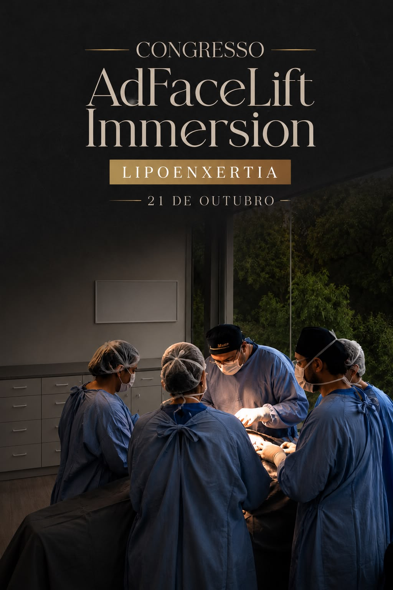

CRONOGRAMA
LIPOENXERTIA
PRIMEIRO DIA
Shopping Cristal
Coffee Break
Aula teórica
TÓPICOS ABORDADOS EM AULA
- Histórico e bases científicas da lipoenxertia
- Coleta da gordura
- Processamento da gordura
- Locais para aplicação de gordura na face
- Técnicas para aplicação da gordura na face
- Complicações e seu manejo
- Macrofat, microfat e nanofat
- Tecnologias associadas
HOSPITAL TEKNON — ETAPA PRÁTICA
Demonstração da retirada de gordura, processamento e lipoenxertia da face
SEGUNDO DIA
HANDS-ON COMPLETO
2 turmas
2 turmas
ESTRUTURA
- 2 dias de imersão
- 4 turmas de hands-on no segundo dia: 2 pela manhã + 2 à tarde
- Hands-on com máximo de 6 alunos
- Observacional: até 50 participantes
- Acompanhamento observacional por transmissão ao vivo em 4K ou presencialmente, acompanhando a prática dos alunos.